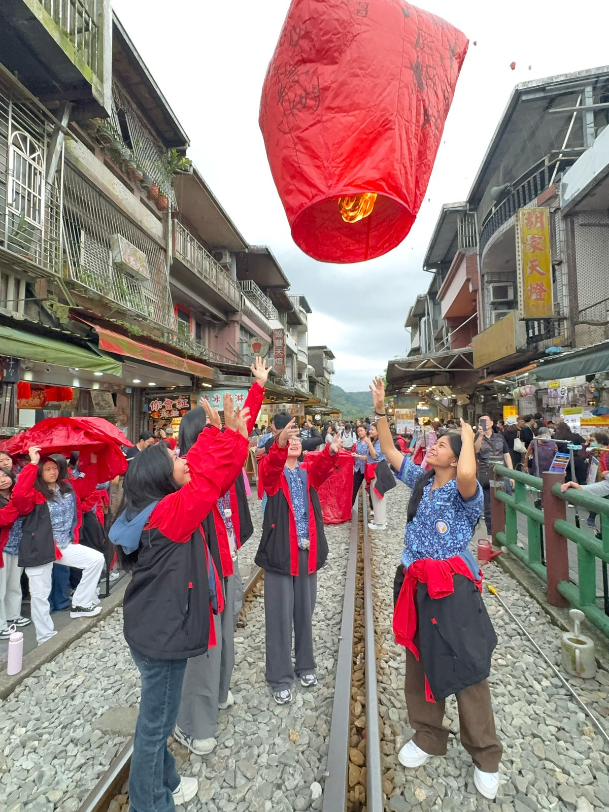

Dalam pelajaran PKn saya diberikan tugas untuk menjelaskan tradisi di Shifen Old Street.
Tradisi lentera di Shifen Old Street, Taiwan, merupakan kegiatan budaya yang sangat terkenal, di mana pengunjung menuliskan harapan, doa, dan impian mereka di atas lentera kertas sebelum melepaskannya ke langit. Tradisi ini berakar dari masa lampau ketika lentera digunakan sebagai alat komunikasi untuk memberi tahu bahwa desa dalam keadaan aman. Kini, lentera langit menjadi simbol harapan dan keberuntungan, dengan berbagai warna yang mewakili makna berbeda seperti kesehatan, cinta, dan kesuksesan. Rel kereta aktif yang membelah jalanan utama menambah daya tarik unik, karena lentera dilepaskan langsung dari atas rel.
Puncak tradisi ini dapat disaksikan dalam Festival Lentera Langit Pingxi yang diadakan setiap tahun saat perayaan Cap Go Meh. Ribuan lentera diterbangkan secara bersamaan, menciptakan pemandangan malam yang memesona dan penuh makna spiritual. Shifen pun menjadi destinasi populer bagi wisatawan lokal maupun mancanegara yang ingin merasakan suasana tradisional Taiwan sambil mengirimkan harapan mereka ke langit.